2025 年底对整个 AI 相关半导体板块做的年度展望。核心是把国产 AI 产业链分成三个层次—— 先炒算力/存力/运力/电力芯片，再炒晶圆厂封测（AI 底座），最后是设备材料/EDA/IP。 2026 年是国产半导体"AI 化元年"，主线明确，关键看二季度起的业绩兑现。
从 2024–2025 年开始，半导体投资主线已全面转向与 AI 强相关——不绑 AI 的细分只有弱复苏空间。据弗若斯特沙利文预测，中国 AI 芯片市场规模将从 2024 年约 1425 亿元增至 2029 年约 13368 亿元；政策要求明年 AI 芯片国产化率干到 40%（过去不足 10%）。
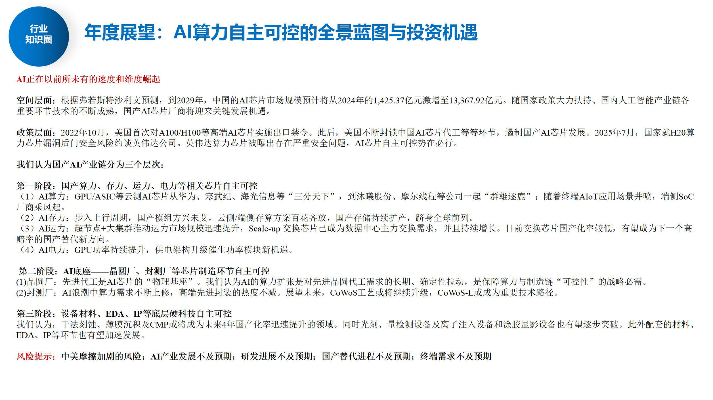
当前（2025 年底）的状态：AI 芯片、存储都已炒过一波预期；2026 年是业绩兑现年——炒的不再是预期，而是业绩是否超预期、国产算力闭环是否验证。
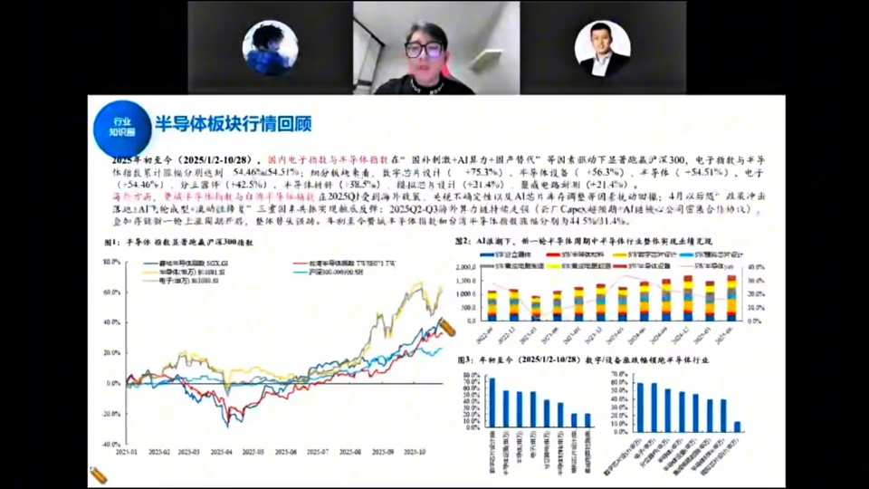
2025 年初至今（截至 10/28），国内电子指数与半导体指数在"国产刺激 + AI 算力 + 国产替代"等因素驱动下显著跑赢沪深 300，电子指数与半导体指数累计涨幅分别达 +54.46%、+54.51%；半导体设备（+56.3%）、分立器件（+42.5%）等细分领涨（图1 半导体指数显著跑赢沪深 300）。海外方面，美光半导体与日月光在 2025Q1 受到海外制裁、关税、科技自主可控三因素冲击后，2025Q2–Q3 随海外算力扩产（云厂 CapEx 超预期 + AI 台积电公司营收台股确认）迎来主升浪（图2 AI 浪潮下新一轮半导体库存周期与行业整体盈利情况）；图3 为年初至今数字/设备及领涨细分行业。进入 11–12 月市场缩量、AI 占电子板块日成交约 40%，板块良性调整，大家把希望寄托于明年。
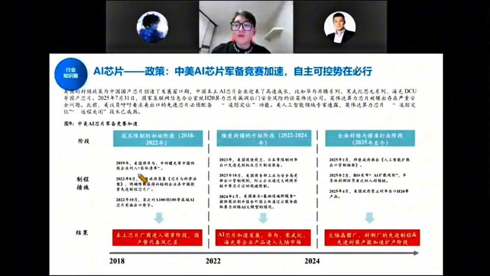
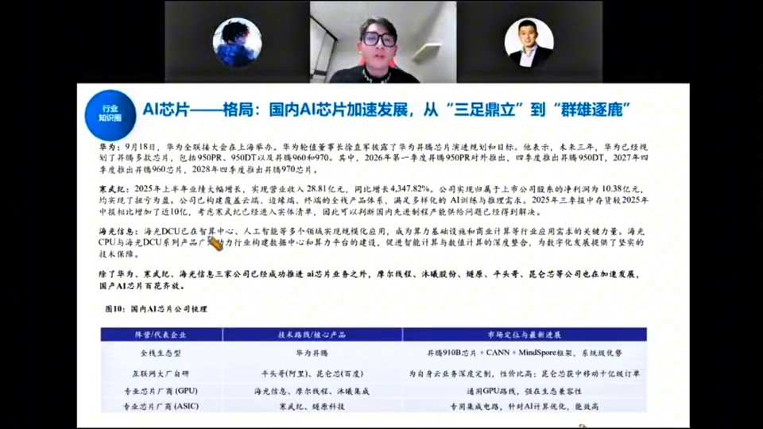
国产 AI 芯片公司梳理（图10）：全栈生态型华为昇腾（910B 芯片 + CANN + MindSpore 框架，系统级优势）；互联网大厂自研平头哥（阿里）、昆仑芯（百度），为自身云业务深度定制、性价比高，昆仑芯获中移动十亿元级订单；专业 GPU 厂商海光信息、摩尔线程、沐曦集成，通用 GPU 路线、强在生态兼容性；专业 ASIC 厂商寒武纪、燧原科技，专用集成电路、针对 AI 计算优化。寒武纪 2025 上半年营收 28.81 亿元、同比 +4347.82%，归母净利 10.38 亿元，构建云端/边缘/终端全线产品体系。
业绩上：寒武纪从去年约 10 亿营收今年做到约 70 亿。端侧 SoC（晶晨/瑞芯微等）今年受存储涨价压制毛利率走弱，靠豆包手机、AI 眼镜等新品催化开始反弹。
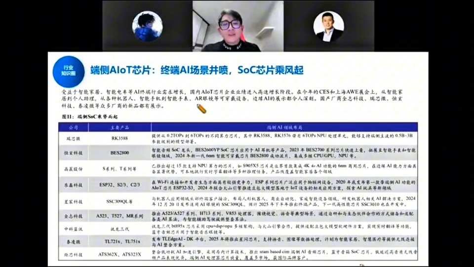
端侧 AIoT 芯片梳理（图11）：受益于智能家居、智能电车等终端 AI 行业需求增长，国内 AIoT 芯片企业进入高速增长期。瑞芯微（RK3588/RK3576，6TOPs NPU）、恒玄科技（BES2600，2024 年 6nm 智能穿戴 SoC）、晶晨股份（S905X5，AI 功能 6nm 制程）、乐鑫科技（ESP32/S23/C23，Wi-Fi/蓝牙 AI 模组）、中科蓝讯（SSC9109QL）、全志科技（A523/T527）、中科驭数（DPU）、泰凌微（TL721x/TL751x）、炬芯科技（ATS362X）等。端侧 SoC 因需集成 NOR Flash/低功耗 DDR 而在存储涨价中成本难传导、毛利率承压，股价一季度底后已跌不动，近期靠 AI 眼镜（每周一款）、字节豆包手机等新品催化率先反弹，晶晨（谷歌链，拿下谷歌 5 年 3 亿颗 A 系列订单）领涨。
单卡性能边际递减后，提升服务器整体性能靠的是GPU 之间的高速互联。超节点（华为 384、8000 卡集群）把过去 8 卡服务器变成几百上千卡组网，GPU 间互联需求爆发——基本上一颗 GPU 就要配一颗 Scale-up 交换芯片。
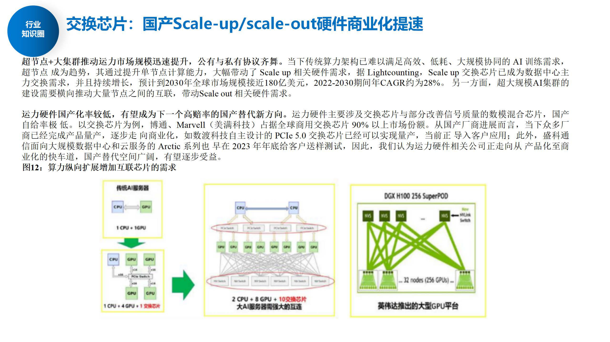
A 股存储本质盯美股（美光/闪迪）同一周期。这轮由减产 + 云厂资本开支提升 + AI 新需求（HDD 缺货→SSD/NAND 替代、HBM/DRAM、AI SSD、HBF）驱动，经销商囤货放大涨幅。9 月浪潮已在扫货买不到 SSD。谁有 NAND/SSD 谁涨得最猛。
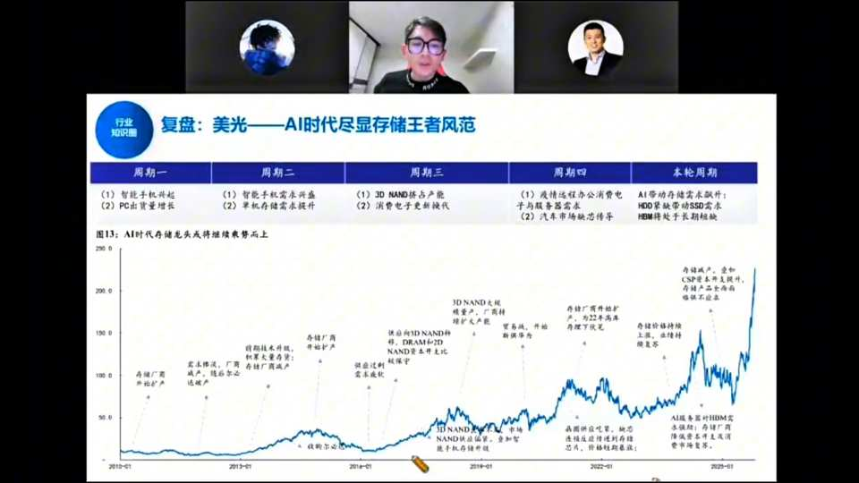
复盘存储五轮周期（图13）：周期一（功能机兴起 + PC 出货增长）、周期二（智能机需求兴盛 + 单机存储需求提升）、周期三（3D NAND 挤占产能 + 消费电子更新换代）、周期四（疫情远程办公消费电子 + 汽车市场缺货）、本轮周期（AI 带动存储需求额外 + HDD 缺货带动 SSD 需求 + HBM 长期处于长期短缺）。存储行业特点是原厂（美光/海力士/三星/长鑫/长存）之下有大量经销商囤货，价格一有变化就灵敏囤货放大涨幅；这轮 9 月浪潮已扫货买不到 SSD，老外优先供自己，经销商惜售囤货，价格陡峭上行。
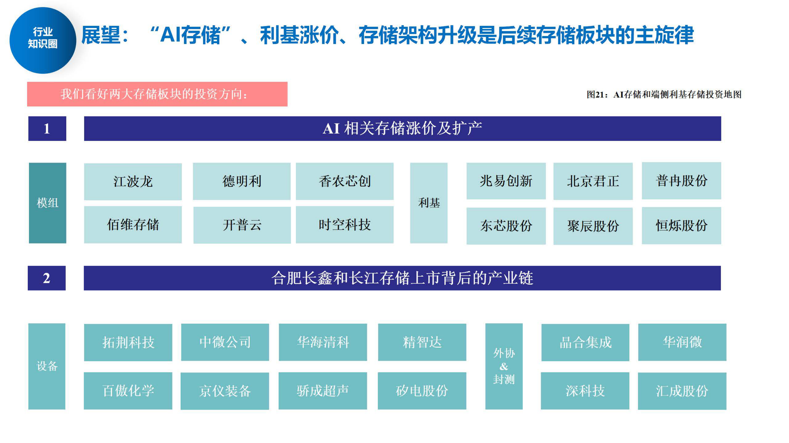
下一阶段的重点不是老的模组涨价逻辑，而是长鑫、长存上市后的扩产产业链：
长期看点：存储不受先进制程制裁限制，国产存储"做到世界最强"是有可能的——两长供应链是最核心方向。新技术 3D DRAM（Chiplet 叠 DDR4 + SoC）因当前 DDR4 涨价短期推迟，但后年是趋势（兆易、君正、瑞芯微、华邦合作）。
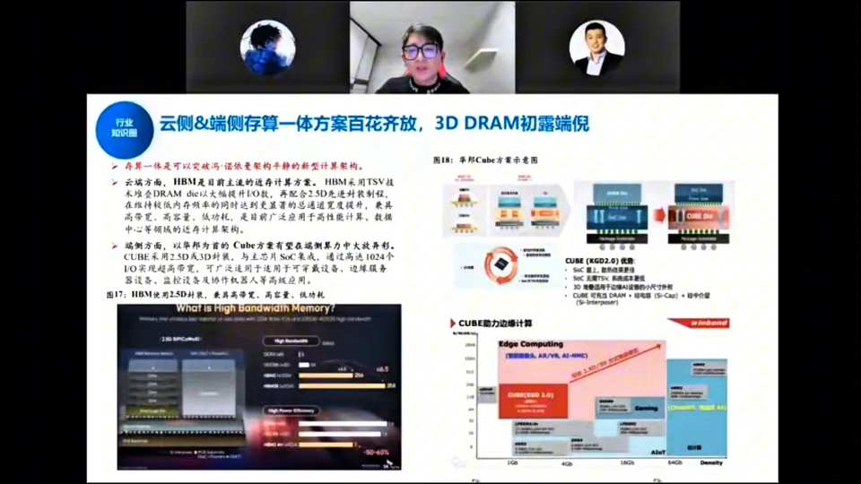
存算一体两条路线（图17/18/20）：云侧HBM 是目前主流存算计算方案，采用 TSV 技术堆叠 DRAM die 以大幅提升 I/O 数，再配合 2.5D 先进封装制程，在维持低内存频率的同时实现更高通道带宽，高容量、高容量、低功耗，已广泛应用于高性能计算、数据中心；端侧以华为 Cube 方案为代表，采用 2.5D 或 3D 封装、与主芯片 SoC 集成，通过高达 1024 个 IO 实现超高带宽，可广泛适用于可穿戴设备、边缘服务器、监控设备及协作机器人等。Logic Base Die 是连接 AI 加速 GPU 与 DRAM 的必备组件，位于 DRAM 底部、充当 GPU 和内存间控制器，客户可自行设计加入自有 IP，使 HBM 定制化、数据处理更高效，预计功耗大幅降低至之前的 30%；3D NAND 层数将继续向约 1000 层演进。短期因 DDR4 涨价削弱 3D DRAM 成本优势而推迟，但技术（堆叠目前仅两层，良率待提升）成熟后后年是产业趋势。
英伟达绕饼（Rubin）方案功率极大，功率大→电流大易击穿，因此服务器供电电压从 415V 升到 800V HVDC，终局是 SST（固态变压器）——一个器件把市电 13.8kV 直降到 800V。2–3 年内全换，主要是美国缺电/电价贵驱动（中国短期用不上，因买不到 Rubin 服务器且不缺电）。
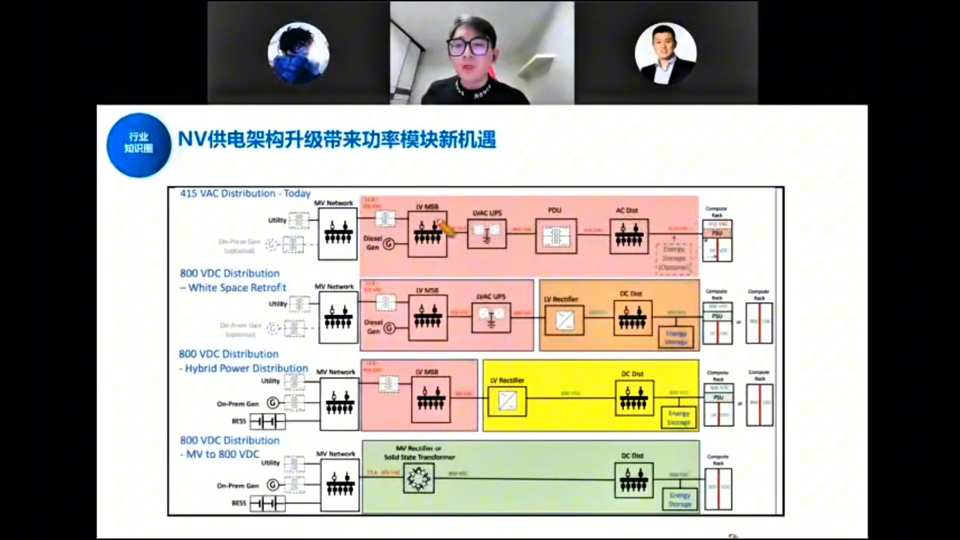
NV 供电架构四级演进（NV 白皮书）：① 415 VAC Distribution（今天）——市电 13.8kV 经多变压器/UPS 降压到 415V 给服务器；② 800 VDC White Space Retrofit——用变频器 + DC-DC 降压模块把架构优化、精简为 800V；③ 800 VDC Hybrid Power Distribution——引入 On-Prem Gas/BESS 混合供电；④ 800 VDC MV to 800V（SST 固态变压器）——一个 MV Rectifier + Solid State Transformer 直接把 13.8kV 市电降到 800V。AI 电力变化核心看谁进入北美/欧洲供应链，而非国内。
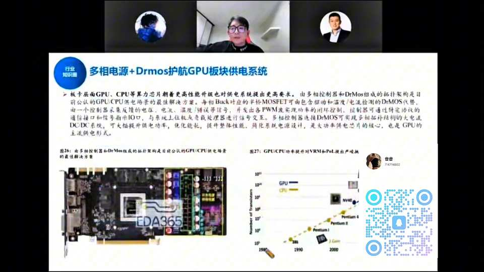
板卡层面 GPU/CPU 算力芯片朝着更高性能升级对供电系统提出更高要求，多相控制器 + DrMos 组成的拓扑架构是目前公认 GPU/CPU 供电方案的最佳解决方案。每相 Buck 对应的半桥 MOSFET 可由包含驱动和温度/电流检测的 DrMOS 代替，由一个控制器采集电压、电流、温度/错误信号，并发多路 PWM 实现功率闭环控制；控制器可通过特定协议的通信接口和信号指示 IO 口，与系统主板或负载处理器进行信号交互，多相控制器选择 DrMOS 可实现多相拓扑结构大电流 DC/DC 系统，大幅提升供电功率、优化能耗。GPU/CPU 功率密度提升对 VRM 和 POL 提出严峻挑战。
中芯国际 7nm AI 芯片产能：2025 年约 8000 片/月 → 2026 年约 1.8 万片 → 后年 3–4 万片；华虹明年扩到约 5000 片/月。稳态看 AI 芯片使中芯扩到约 7 万片、华虹约 5 万片/月（合计约 12 万片）即饱和，按每片 10 万元对应约 1400–1500 亿收入。封测（CoWoS）增量对应约 400 亿收入空间，测试厂（利扬等）也受益。
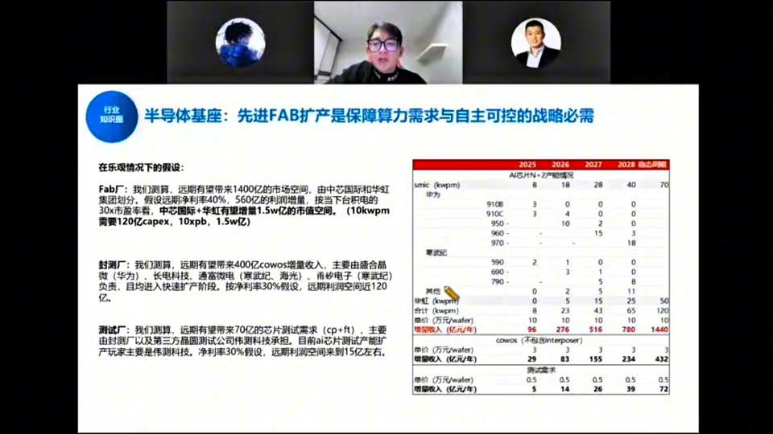
乐观假设下的远期空间（引用摩根士丹利研报并部分修改）：Fab 厂远期约 1400 亿市场空间，由中芯国际和华虹划分，假设净利率 40%、约 560 亿利润增量，按当下 30x PE 测算中芯华虹合计约 1.5 万亿市值空间（10kwpm 需 120 亿 capex、10x PB、1.5 万亿）；表格列示 SMIC（kwpm）AI 芯片 N+2 产能 2025–2028 年 8→18→28→40→70，华为/昇腾 910B/910C/950/970 系列产能爬坡。封测厂远期约 400 亿 CoWoS 增量，主要由盛合晶微（华为）、长电科技、通富微电、甬矽电子、沛顿（深科技）等负责，净利率 30% 约 120 亿利润空间。测试厂远期约 70 亿芯片测试需求（cp+ft），主要由封测厂及第三方晶圆测试公司（伟测科技）承担，净利率 30% 约 15 亿。
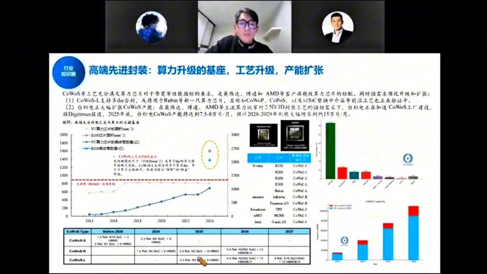
CoWoS 等工艺充分满足算力芯片对带宽等性能指标要求，是英伟达、博通和 AMD 等客户旗舰算力芯片的标配。CoWoS-L 支持多 die 合封，或将用于 Rubin 等新一代算力芯片；其他如 CoWoP、CoPoS 以及以 SiC 替换中介层等前沿工艺也在验证中。台积电 CoWoS 产能 2025 年约 7.5–8 万片/月，预计 2028 年扩大到约 15 万片/月（图35）。国内因中芯华虹工艺不强、单晶圆不能切很大，更多选择两颗晶圆合封的 CoWoS-S/R 方案，工艺仍在改善和扩产中；通富微电虽有 AMD 大客户但 AMD 产能尚未给通富。
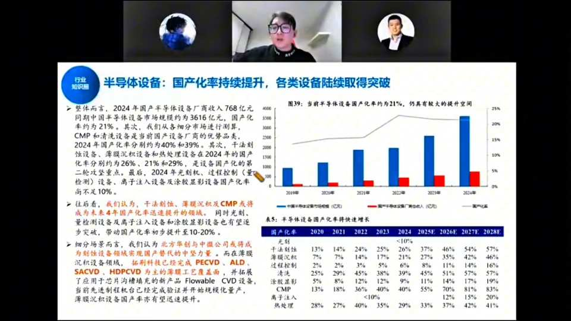
整体而言，2024 年国产半导体设备厂商收入约 768 亿元，同期中国半导体设备市场规模约 3616 亿元，国产化率约 21%，仍有较大提升空间。分细分市场：干法刻蚀、薄膜沉积、清洗设备国产化率约 40%/39%（当前国产设备厂商优势品类）；CMP、量测、热处理设备分别约 26%/21%/29%（国产化率第二轮攻坚重点）；光刻、量检测、离子注入、涂胶显影不足 10%。往后看，干法刻蚀、薄膜沉积及 CMP 将成为未来 4 年国产化率快速提升领域，光刻、量测及离子注入、涂胶显影设备也有望逐步突破、带动国产化率初步提升至 10–20%。场景上北方华创与中微公司或将成为刻蚀/薄膜设备国产替代中坚力量；拓荆科技 PECVD、ALD、SACVD、HDP-CVD 等 CVD 设备已进入逻辑芯片 28nm 及以下，并拓展应用于存储芯片堆叠的新品 Flowable CVD 设备。
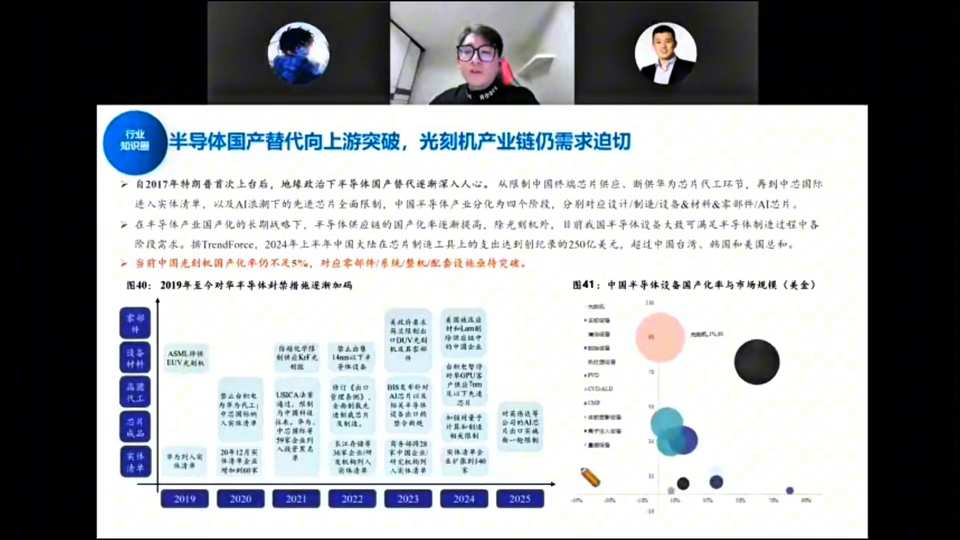
自 2017 年特朗普上台后地缘政治推动半导体国产替代渐入人心，从限制中国存储芯片供应、断供华为代工环节，再到中芯国际进实体清单，以及 AI 浪潮下的芯片全面限制。中国半导体产业分为四个阶段，分别对应设计/制造/设备&材料&零部件/AI 芯片。在半导体国产化长期战略下，除光刻机外目前我国半导体设备大部分可满足半导体制造过程各阶段需求；2024 年上半年中国大陆在芯片制造设备支出达到创纪录的 250 亿美元，超过中国台湾、韩国和美国总和。当前中国光刻机国产化率仍不足 5%，对应零部件/系统/整机配套设备亟待突破。
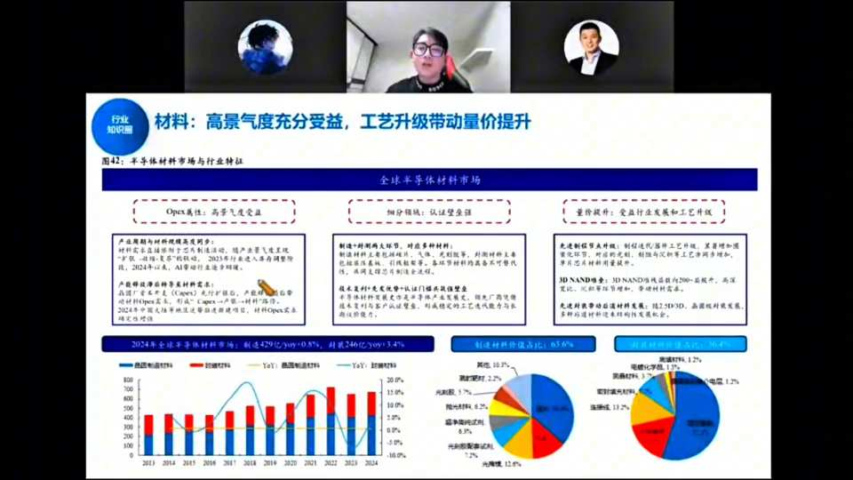
材料三大逻辑（图42）：OpEx 属性高景气度受益（产业周期与材料规模高度同步，材料在 Fab 运营成本中占比约 13%、随 Fab 产线规模扩大 OpEx 稳定）；细分赛道认证壁垒强（制造/材料两大环节，制造材料由设备、气体、光刻胶、湿制程材料等构成，认证周期长、客户粘性高）；量价提升受益行业发展和工艺升级（先进制程节点升级、晶圆厂扩产带动量价齐升；3D NAND 堆叠、先进封装带动材料需求）。2024 年全球半导体材料市场：制造材料约 429 亿元（同比 +9.8%）、封装材料约 240 亿元（同比 +7.4%）；材料与设备高度联动（一起涨），光刻胶是中美/中日对抗最爱炒环节（鼎龙、安集等配合两长与两大 Fab 供应链）。
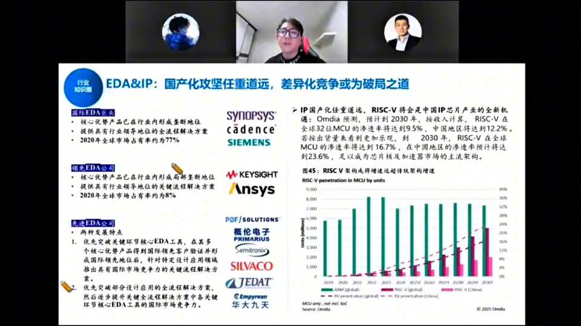
EDA 三梯队：国际 EDA 巨头（Synopsys、Cadence、Siemens EDA）核心优势产品已在行业内形成垄断，2020 年全球市场占有率约 77%；领先 EDA 公司（华大九天等）核心优势产品已在行业形成局部垄断，2020 年市占约 8%；先进 EDA 公司（概伦电子、广立微、Silvaco、Keysight、Ansys、JEDAT、Empyrean、华大九天等）走"先突破关键环节核心 EDA 工具、再逐步提升全流程解决方案"路径。IP 国产化任重道远，RISC-V 将是中国 IP 芯片产业的全新机遇：Omdia 预测到 2030 年按收入计算 RISC-V 在全球 32 位 MCU 渗透率将达 9.5%、中国地区达 12.2%；若出货量来看更乐观，2030 年 RISC-V 在全球 MCU 渗透率将达 16.7%、中国地区达 23.6%，成为芯片设计加速器市场主流架构。EDA 当前阶段炒情绪与政策（类光刻机但弱，多作补涨），公司靠并购扩张；IP（芯原等）是国产化重中之重但估值极贵、泡沫化严重。
跟踪信号：① 中芯少数股东权益增长（中芯南方放量→先进制程扩产加速→设备材料拉动）；② 长鑫长存上市后的扩产规划——两长对国产设备包容度极高（不像中芯有 70% 用海外），且不受 EUV 限制。
主线无疑是 AI 半导体，但现在涨不动的原因是"该炒的预期都轮到一遍了"，且 AI 占电子板块日成交约 40%、市场缩量。2026 年关键词是"兑现"：
一句话：政策有了、供给需求摆着，2026 年就看国产 AI 闭环能否兑现业绩；中报/二季度见分晓。